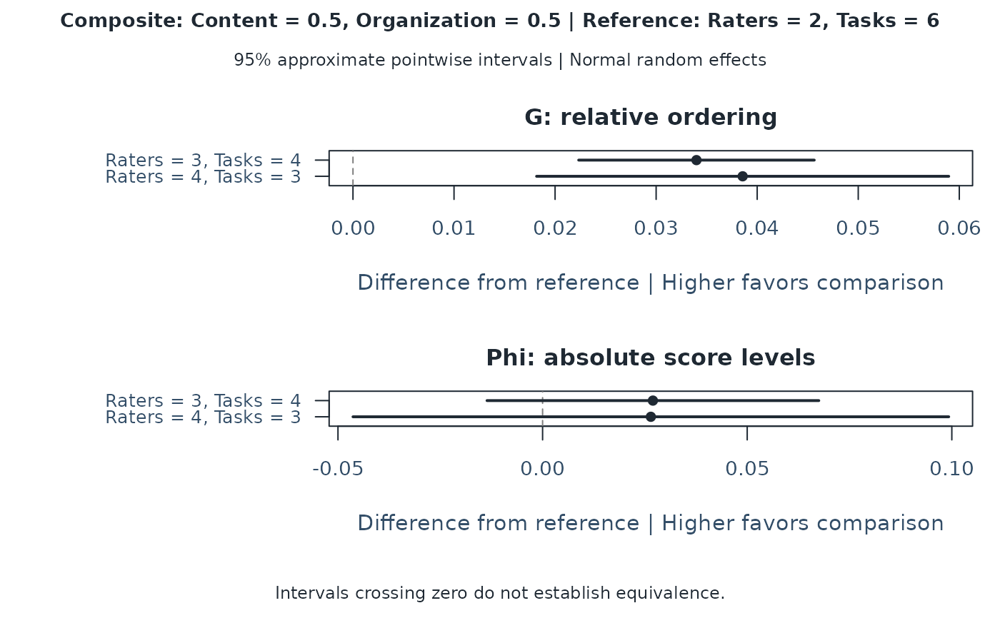
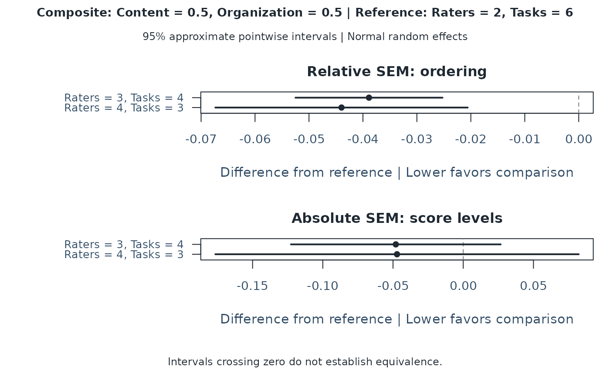

Compare prespecified multivariate D-study plans
Source:R/api-multivariate-d-compare.R
mfrm_multivariate_d_compare.RdEstimate how much G, Phi or SEM changes from a reference plan, including the dependence between plans estimated from the same G-study. This first interval method requires two common random facets and an explicit normal random-effects assumption.
Arguments
- x
A result from
mfrm_multivariate_d_study()with at least two plans.- reference
Row number of the reference plan in
x$design_grid.- score
One original score name. With no selection, use the sole composite, or the first original score if there is no composite.
- composite
One named composite, or
"Composite"for vector weights. Select eitherscoreorcomposite. Several composites require selection.- assumption
Required:
"normal"asserts independent, normally distributed random-effect vectors with constant component covariances. This assumption is not tested by the function.- level
Pointwise confidence level between zero and one, default .95.
- object
A result from
mfrm_multivariate_d_compare().- ...
Reserved for method compatibility.
Value
An mfrm_multivariate_d_comparison list with comparisons (one row
per comparison plan and metric), covariance (joint sampling covariance
of those differences), design_grid, reference, selected score/composite
and weights, level, method, and component/sampling-covariance diagnostics.
summary() returns the comparison table. Status describes interval
availability; point differences can remain available without an interval.
Details
Use this comparison when choosing between plans specified before inspecting their estimates. For example, compare two raters and six tasks with three raters and four tasks. A positive G/Phi difference favors the comparison plan; a negative SEM difference favors it. An interval containing zero means the direction is uncertain, not that the plans are equivalent. Equal rating counts do not establish equal examinee burden or cost.
The current scope is two common random facets, complete balanced ANOVA or identifiable incomplete crossed MINQUE(0), and future complete crossed plans. Persons and both facets are sampled from their stated populations. The source assignments are held fixed and must preserve the random-effect distributions. One-facet, nested, fixed-facet, nonnormal-robust and informative-missingness intervals are not provided. Ordinal score labels alone do not justify normal effects. Incomplete source designs can have much weaker information than complete designs with the same numbers of observed levels.
The method uses raw estimated components in the Gaussian covariance of
quadratic-form estimates, then the delta method for paired differences and
a normal critical value. It uses the gradient of the difference, not a sum
of independent marginal variances. For a complete source design this agrees
with mean-square variances 2 * MS^2 / df. These are approximate intervals,
not exact finite-sample guarantees. Small facet pools, uneven assignments
and estimates near boundaries can impair the approximation. In a bounded
assessment, a skewed-effect condition reduced nominal 95% coverage to about
92%; this method must not be described as distribution robust.
Negative components are retained and flagged. No components, differences or interval endpoints are clipped. An unavailable point projection, boundary derivative or nonpositive estimated difference variance leaves that interval unavailable with a reason. Identical plans have an exact zero difference when their point projections are available. Component and sampling-covariance diagnostics do not establish model fit or interval accuracy.
Intervals are pointwise for each prespecified comparison. They do not support
choosing the largest observed improvement, simultaneous claims over all rows,
or comparisons between adaptively selected score weights. SEM is measurement
error in score units; SE here is sampling uncertainty in the difference.
Point projections are recomputed from the stored G-study using current rules;
no G-study is refitted and x is not modified. The G-study must retain its
analyzed data. For incomplete sources, covariance computation processes
blocks of rows to avoid a full observation-by-observation matrix; its running
time is still quadratic in the number of observed ratings.
Examples
# Fictional continuous ratings: two common random facets, two score components.
set.seed(24)
ratings <- expand.grid(Person = 1:40, Rater = 1:8, Task = 1:6)
ratings$Content <- ratings$Organization <- 0
sources <- list("Person", "Rater", "Task", c("Person", "Rater"),
c("Person", "Task"), c("Rater", "Task"), c("Person", "Rater", "Task"))
for (source in sources) {
group <- interaction(ratings[source], drop = TRUE)
effects <- matrix(rnorm(2 * nlevels(group)), ncol = 2)
ratings[c("Content", "Organization")] <-
ratings[c("Content", "Organization")] + effects[as.integer(group), ]
}
g <- mfrm_multivariate_gstudy(ratings, c("Content", "Organization"))
d <- mfrm_multivariate_d_study(g,
data.frame(Raters = c(2, 3, 4), Tasks = c(6, 4, 3)),
weights = c(Content = .5, Organization = .5))
comparison <- mfrm_multivariate_d_compare(d, reference = 1,
assumption = "normal")
summary(comparison)
#> Reference Scenario Kind Score Metric ReferenceValue Value
#> 1 1 2 Composite Composite G 0.5607879 0.5947792
#> 2 1 2 Composite Composite Phi 0.3646152 0.3915712
#> 3 1 2 Composite Composite RelativeSEM 0.5774748 0.5385960
#> 4 1 2 Composite Composite AbsoluteSEM 0.8613827 0.8133822
#> 5 1 3 Composite Composite G 0.5607879 0.5993499
#> 6 1 3 Composite Composite Phi 0.3646152 0.3910704
#> 7 1 3 Composite Composite RelativeSEM 0.5774748 0.5335039
#> 8 1 3 Composite Composite AbsoluteSEM 0.8613827 0.8142378
#> Difference Status SE Lower Upper
#> 1 0.03399130 Available 0.005947269 0.02233487 0.04564774
#> 2 0.02695599 Available 0.020683397 -0.01358272 0.06749470
#> 3 -0.03887873 Available 0.006955045 -0.05251036 -0.02524709
#> 4 -0.04800055 Available 0.038102461 -0.12268000 0.02667890
#> 5 0.03856203 Available 0.010405112 0.01816839 0.05895568
#> 6 0.02645516 Available 0.037138595 -0.04633515 0.09924547
#> 7 -0.04397091 Available 0.011934932 -0.06736295 -0.02057887
#> 8 -0.04714496 Available 0.066016840 -0.17653559 0.08224567
plot(comparison)

plot(comparison, type = "sem")
